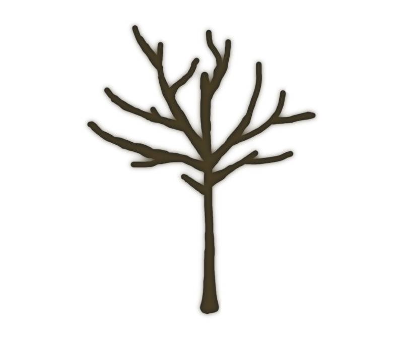

<speech-bubble [owlMood]="owlMood" [dialogue]=""></speech-bubble>
<leaf *ngFor="let leaf of leaves"
      [x]="leaf.x"
      [y]="leaf.y"
      [rotation]="leaf.rotation"
      [zIn]="leaf.zIn"
      [status]="leaf.status">
</leaf>

